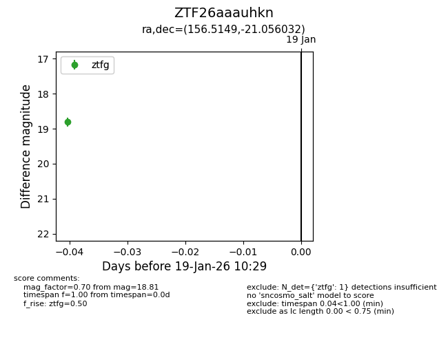
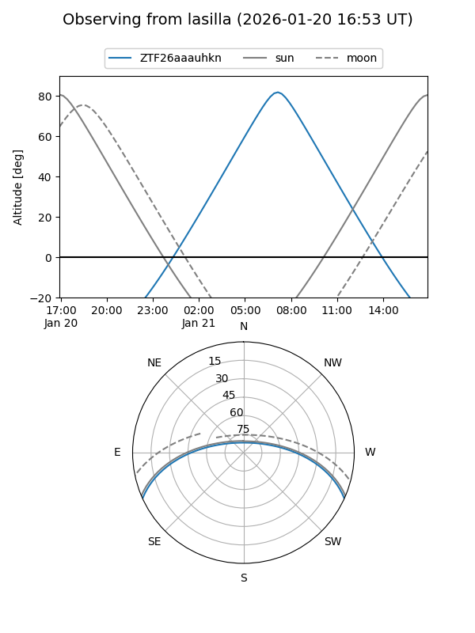
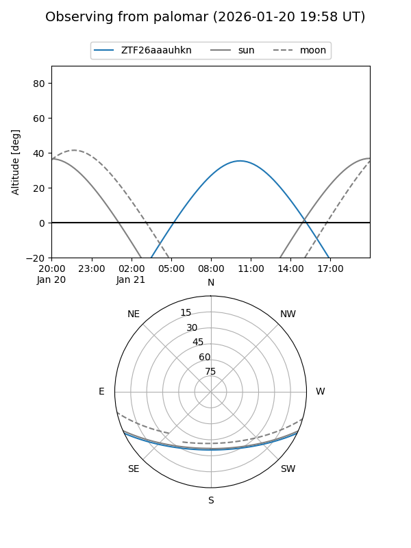

ZTF26aaauhkn
Target ZTF26aaauhkn at 2026-01-21 10:36
Aliases and brokers:
FINK: link
Lasair: link
ALeRCE: link
alt names
ZTF26aaauhkn (ztf,fink_ztf)
Coordinates:
equatorial (ra, dec) = 156.5149,-21.05603
equatorial (HMS+DMS) = 10:26:03.58,-21:03:21.72
galactic (l, b) = (263.0766,+30.34235)
Flags:
Photometry:
last ztfg=18.81
1 ztfg detections
Lightcurve

Visibility


Additional plots